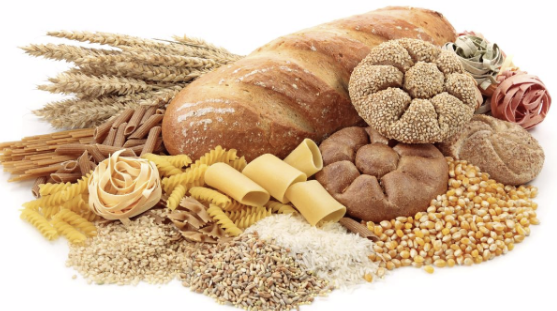

3대영양소


에너지의 공급원과 에너지의 저장으로 중요한 영양소이고 또한 세포 구성 물질도 됩니다.
탄수화물 중에서 비교적 작은 분자이고 물에 녹아서 단맛이 나는 물질을 당류라고 합니다.
광합성의 대표적인 산물로서 자연계에 널리 분포되어 있으며,
지구상의 많은 생명체가 이를 분해하여 에너지 대사에 사용한다.
탄수화물이라는 명칭은 영어 '카보하이드레이트(carbohydrate)'를 번역한 것으로,
‘글루코스(C6H12O6)’의 발견 당시 분자식을 C6(H2O)6인 탄소의 수화물(물 분자와의 결합체)로
오기하였기 때문에 붙여진 이름이다. 현재는 디옥시당(디옥시리보스) 역시 탄수화물의 한 분류로
정의되고 있다.
- 단당류(Monosaccharide)
탄수화물의 단위체로 5탄당(자일로스(Xylose), 리보스(Ribose), 디옥시리보스(Deoxyribose) 등), 6탄당(포도당(Glucose), 과당(Fructose), 갈락토스(Galactose) 등)이 있다.
- 이당류(Disaccharide)
단당류 2개가 결합된 것으로 엿당(Maltose), 설탕(Sucrose), 젖당(Lactose) 등이 있다.
- 다당류(Polysaccharide)
단당류 여러 개가 결합된 것으로 녹말(Starch)(알파-포도당 중합체), 글리코젠(Glycogen)(알파-포도당 중합체), 셀룰로스(Cellulose)(베타-포도당 중합체) 등이 있다.
- 특수당류
일부 탄수화물은 당의 작용기가 특수한 원자로 치환된 것이 있는데 질화당류(글루코사민(Glucosamine), 키토산(Chitosan) 등), 할로겐화당류(수크랄로스(Sucralose) 등) 등이 있다.
입에서 아밀레이스에 의해 소화가 시작되고 췌장의 아밀레이스에 의해 십이지장
부분에서 대부분 소화, 흡수된다. 내장 상피세포의 효소에 의해 단당류로 분해되고 transporter에 의해 흡수된다.
과당은 촉진확산되고, 포도당, 갈락토오스는 Na+와 함께 능동수송된다.
이는 이차능동수송으로, 여기 이용되는 Na+ 기울기는 거의 전부 Na+/K+ pump로부터 생긴다.
섭취된 탄수화물은 분해, 변형되어 최종적으로는 6탄당인 포도당 상태로 우리 몸에서 이용된다.